福岡之旅 · Day 1 — 啟程

福岡之旅 · 啟程
\n\n\n\n2026年5月17日 · 台北 → 福岡 ✈️
\n一趟說走就走的小旅行，從台北到福岡。在博多地下街吃一幸舍泡系拉麵、排隊買大福、逛OIOI百貨，最後以夜晚的大東園燒肉完美收尾。這是我們的福岡第一天。
\n\n\n\n\n\n\n\n
? 清晨出發
\n\n\n\n05:30 天還沒全亮就從家裡出發去桃園。
\n\n\n\n05:50 抵達桃園機場，辦理行李托運。清晨人不多，過程很順利。
\n\n\n\n\n\n\n\n
? 候機時間
\n\n\n\n06:20 通關完畢，進到管制區等候。站在登機門前，看著窗外的飛機起落，等待 BR 106 飛往福岡。
\n\n\n\n \n\n\n\n
\n\n\n\n\n\n\n\n
✈️ 登機 BR 106
\n\n\n\n07:00 看到今天的座駕了，長榮航空 BR 106。
\n\n\n\n \n\n\n\n
\n\n\n\n \n\n\n\n
\n\n\n\n07:46 坐好了，繫上安全帶。準備起飛 ✈️
\n\n\n\n\n\n\n\n
? 福岡到著
\n\n\n\n \n\n\n\n
\n\n\n\n從空中俯瞰福岡，天氣不錯 ?️
\n\n\n\n \n\n\n\n
\n\n\n\n11:06 降落福岡機場 ? 九州之旅正式開始！
\n\n\n\n\n\n\n\n
? 抵達住宿
\n\n\n\n \n\n\n\n
\n\n\n\n12:28 到 THE BLOSSOM HAKATA Premier 辦好 check in，放下行李 ?
\n\n\n\n\n\n\n\n
? 漫步博多
\n\n\n\n \n\n\n\n
\n\n\n\n12:48 從飯店出發，漫步往博多車站方向 ?
\n\n\n\n \n\n\n\n
\n\n\n\n走進博多車站地下的商店街，熱鬧又有在地氛圍 ?
\n\n\n\n\n\n\n\n
? 博多拉麵午餐
\n\n\n\n \n\n\n\n
\n\n\n\n \n\n\n\n
\n\n\n\n13:24 來到福岡第一餐當然是拉麵！在地下街找到了博多一幸舍——泡系豚骨拉麵的始祖店。
\n\n\n\n一幸舍創立於 2004 年，以獨特的「泡系」技法打出綿密細緻的湯泡，讓豚骨湯頭濃郁卻不油膩。目前足跡已遍佈全球超過 10 個國家，是福岡最具代表性的拉麵品牌之一。
\n\n\n\n\n\n\n\n
? 飯後甜點
\n\n\n\n \n\n\n\n
\n\n\n\n14:00 吃完拉麵當然少不了甜點！來一顆最愛的大福，軟糯紮實 ?
\n\n\n\n\n\n\n\n
? 桌遊小角落
\n\n\n\n \n\n\n\n
\n\n\n\n14:23 在地下街發現了一區桌遊空間 ?
\n\n\n\n\n\n\n\n
?️ 博多 OIOI
\n\n\n\n \n\n\n\n
\n\n\n\n15:11 在博多 OIOI 八樓逛逛 ?️
\n\n\n\n\n\n\n\n
? 排隊美食
\n\n\n\n \n\n\n\n
\n\n\n\n16:47 逛街途中發現排隊美食，跟著排就對了 ?
\n\n\n\n\n\n\n\n
16:47（福岡時間） — 排隊美食 ?️
\n\n\n\n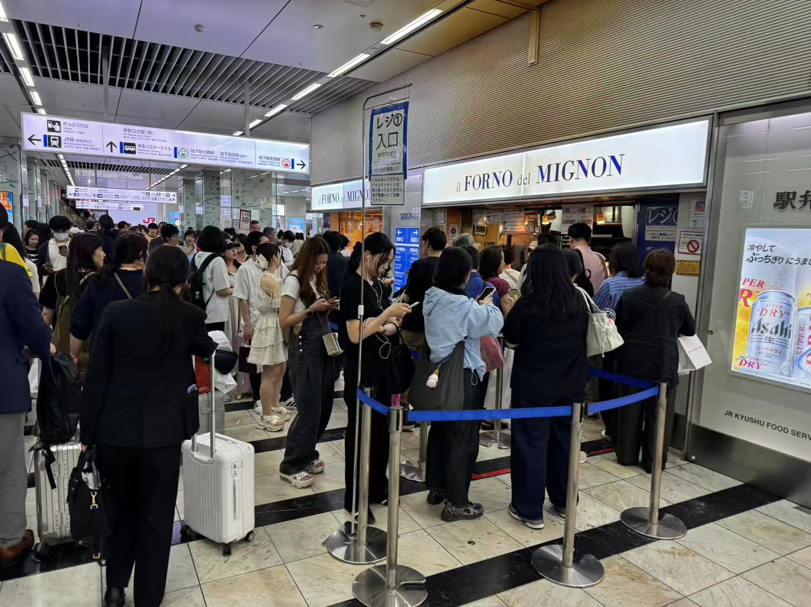
\n\n\n\n\n\n\n\n
? 大東園燒肉晚餐
\n\n\n\n \n\n\n\n
\n\n\n\n \n\n\n\n
\n\n\n\n \n\n\n\n
\n\n\n\n \n\n\n\n\n\n\n\n\n
\n\n\n\n\n\n\n\n\n\n\n\n\n
?️ 櫛田神社夜訪
\n\n\n\n19:14 吃完燒肉散步到櫛田神社，大東園斜對面過馬路就到。
\n\n\n\n\n\n \n\n\n
\n\n\n \n\n\n
\n\n\n \n\n\n\n\n\n\n\n
\n\n\n\n\n\n\n\n \n\n\n
\n\n\n \n\n\n
\n\n\n \n\n\n\n\n\n
\n\n\n\n\n\n? 歷史沿革
\n\n\n\n櫛田神社創建於 西元 757 年（天平宝字元年），距今已有超過 1260 年的歷史。相傳是從伊勢國松坂（今三重縣松阪市）的櫛田神社分靈而來，作為博多港町的守護神而建立。
\n\n\n\n戰國時代末期，豐臣秀吉在統一九州後進行博多復興時，於 1587 年（天正 15 年）下令重建了櫛田神社的社殿，奠定了今日的基礎。
\n\n\n\n⛩️ 供奉神明與御利益
\n\n\n\n櫛田神社合祀三柱神明：
\n\n\n\n- \n
- 大幡主命（櫛田宮） — 厄除け、商売繁盛 \n
- 天照大御神（大神宮） — 國家鎮護、五穀豐穣 \n
- 須佐之男命（祇園宮） — 悪霊退散、疫病消除 \n
自古以來被視為博多的總鎮守，當地人親切地稱之為「お櫛田さん」。
\n\n\n\n? 博多祇園山笠
\n\n\n\n每年 7 月 1 日至 15 日舉辦的博多祇園山笠是櫛田神社最大的祭典，已被指定為日本重要無形民俗文化財。祭典期間，男性扛著高達十幾公尺、重約一噸的豪華山笠神轎在博多街頭奔跑，場面震撼。神社內常年展示著一座巨大的山笠神轎，夜間點燈後雕刻細節更加清晰。
\n\n\n\n? 夜間參拜
\n\n\n\n不同於白天的觀光人潮，夜晚的櫛田神社格外寧靜。成排的燈籠亮起暖黃光芒，映照著古老的社殿與巨大的山笠，氣氛莊嚴而美麗。
\n\n\n\n\n\n
18:00（福岡時間） — 大東園開始吃喝 ??
\n\n\n\n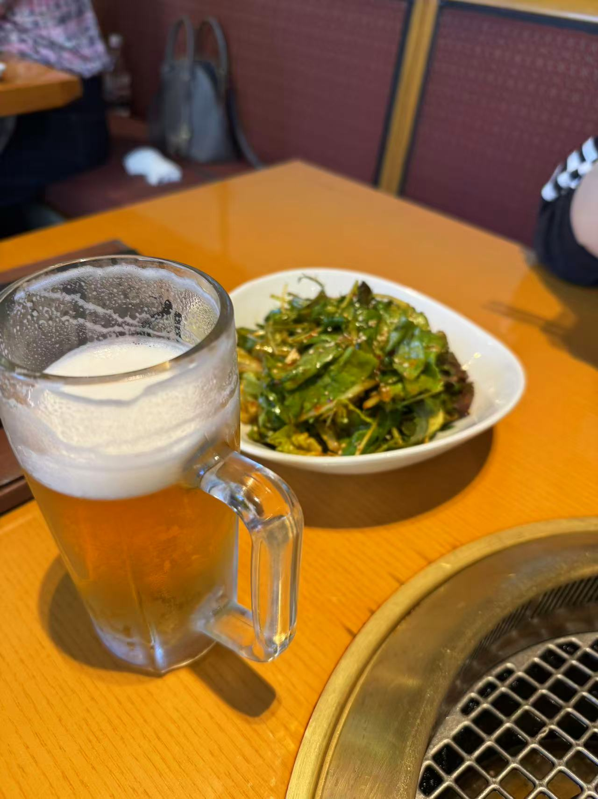
\n\n\n\n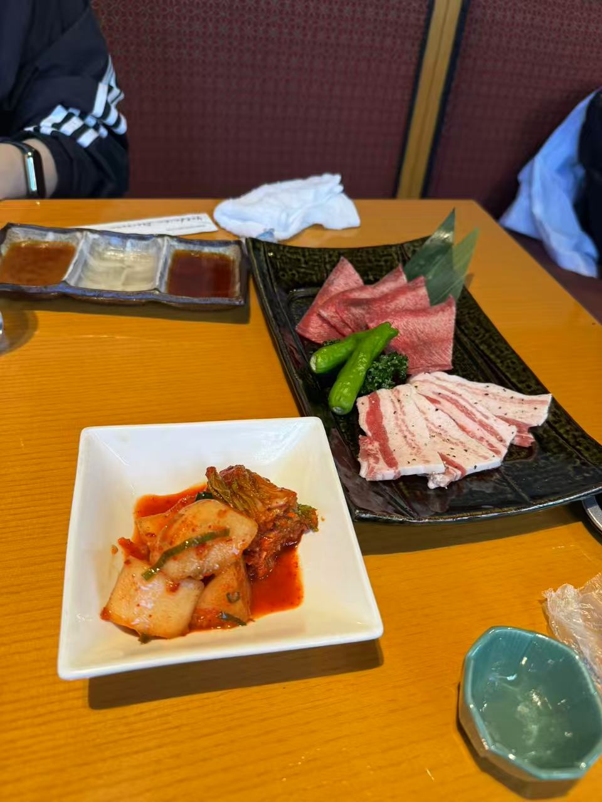
\n\n\n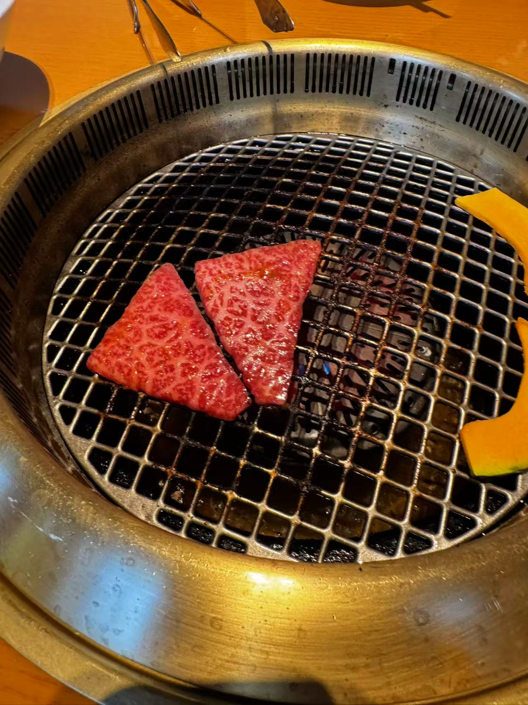
\n\n\n\n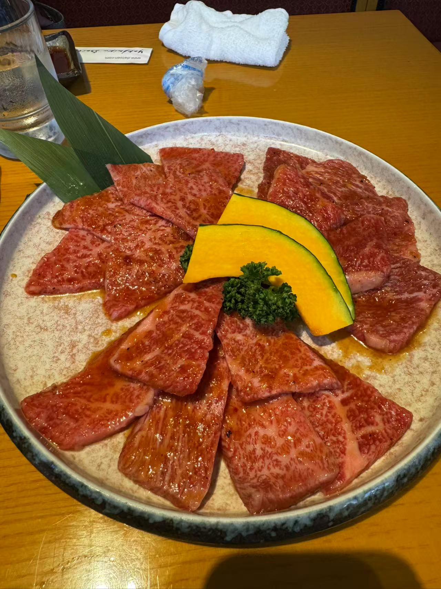
\n\n\n\n\n\n\n
19:14（福岡時間） — 櫛田神社 ⛩️
\n\n\n\n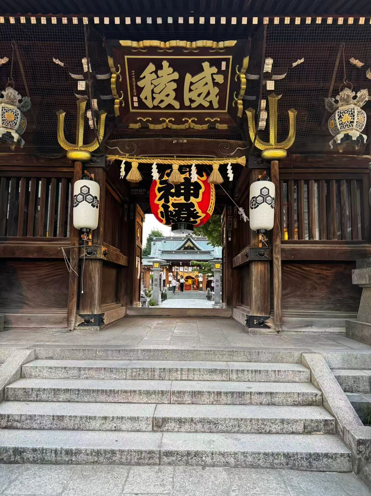
\n\n\n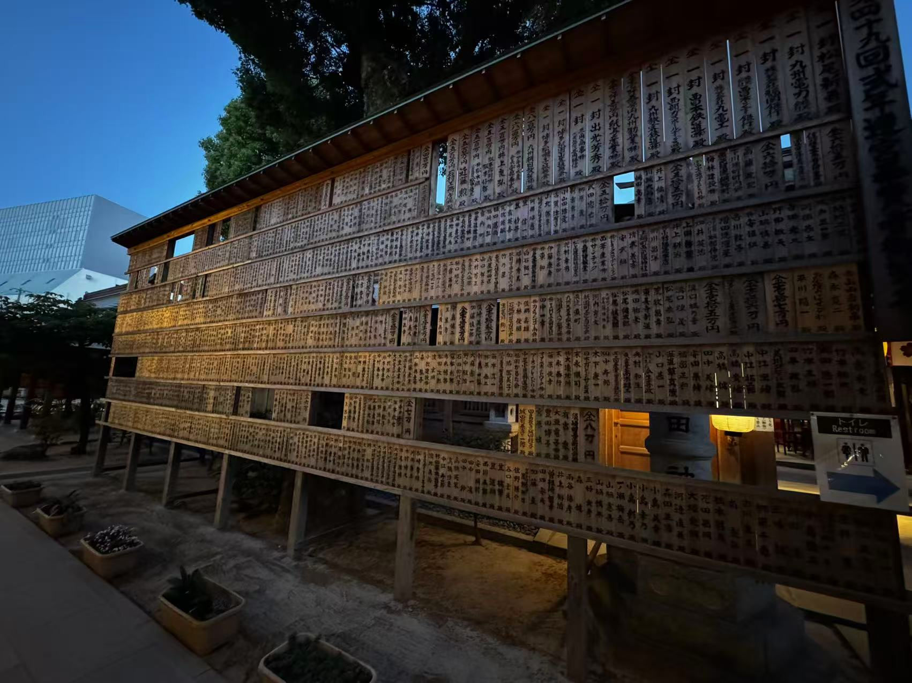
\n\n\n\n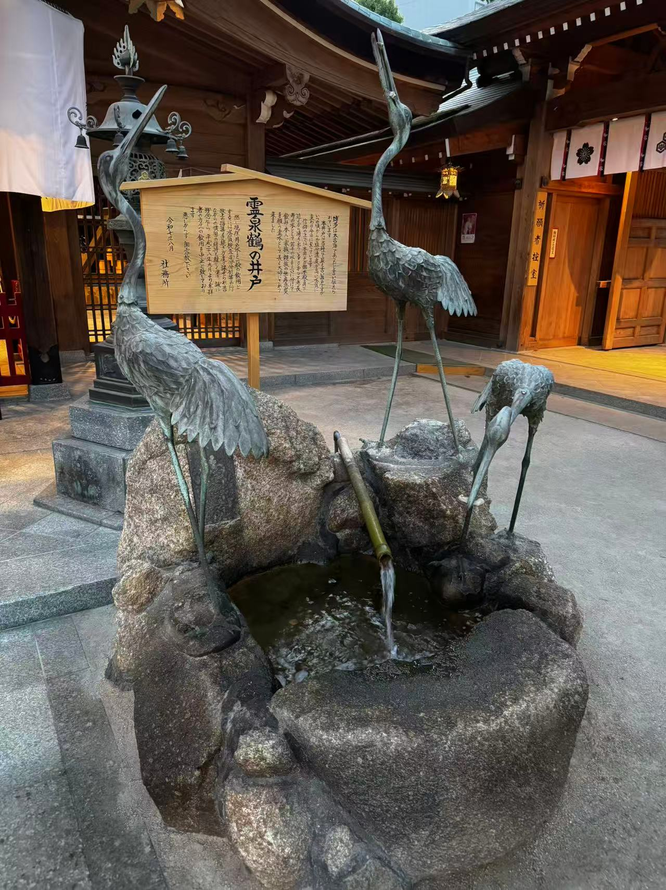
\n\n\n\n夜間的櫛田神社更有韻味，燈籠光影下的古老神社，讓人感受到博多千年的歷史底蘊 ?
\n\n\n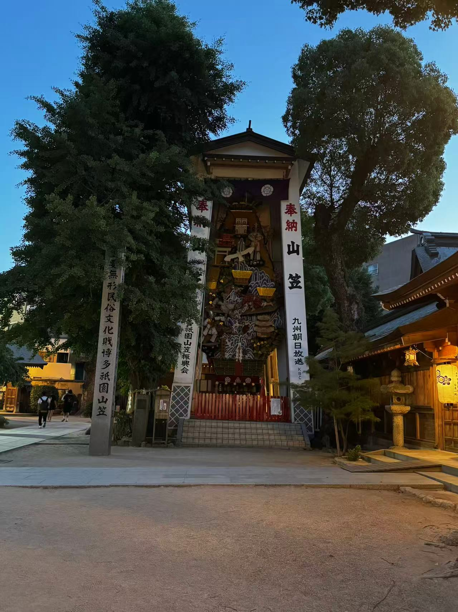
\n\n\n\n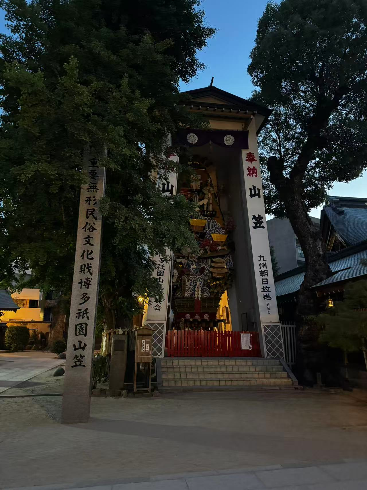
\n\n\n\n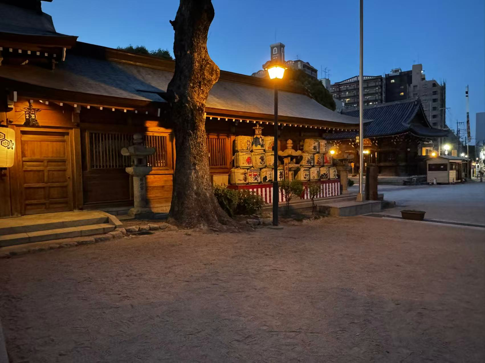
\n\n\n\n櫛田神社創建於西元757年，是博多最古老的神社，被稱為「博多總鎮守」。供奉大幡主命、天照大神、須佐之男命三柱神明，已有超過1260年歷史。每年七月舉辦的「博多祇園山笠」是福岡最盛大的祭典，高達十幾公尺的山笠神轎平時就在神社內展示，晚上點燈後非常震撼 ?
\n\n\n\n\n\n\n\n
? 博多運河城夜間水舞
\n\n\n\n20:02 — 從櫛田神社散步 2 分鐘就到博多運河城，正好趕上晚上的水舞秀。B1 中央廣場定時上演水舞表演，夜間搭配燈光與音樂，比白天更加絢麗動人。
\n\n\n\n\n\n \n\n\n
\n\n\n \n\n\n\n\n\n
\n\n\n\n\n\n? 水舞實況
\n\n\n\n水舞之一
\n\n水舞之二
\n\n \n\n\n\n
\n\n\n\n運河城內也有不少美食選擇。吃完燒肉、看完神社、再來運河城吹著晚風看水舞，完美的福岡之夜 ?
\n\n\n\n\n\n
博多運河城
\n\n\n\n20:02（福岡時間） — 博多運河城的噴水池水舞秀 ?
\n\n\n\n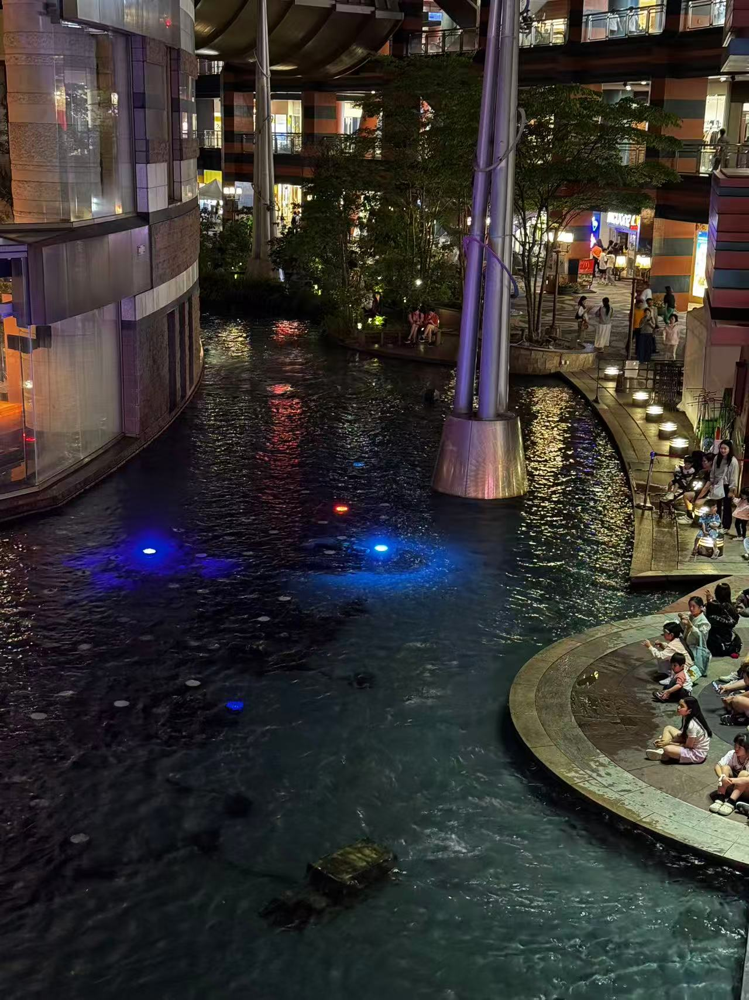
\n\n\n\n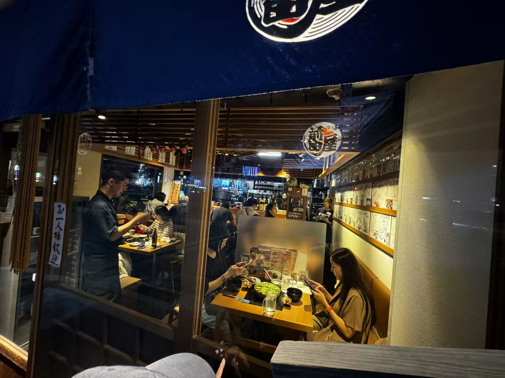
\n\n\n\n吃飽後散步來運河城看水舞秀，伴隨著音樂與燈光變化的噴泉表演 ?
\n\n\n\n\n\n\n\n\n\n伴隨音樂與燈光的博多運河城水舞秀，為福岡第一天畫下完美句點 ✨?
\n